- What support does Student Futures provide?
- The team are based on campus and advisers are available throughout the week to talk to you in person, Teams and to support by email. Make an appointment or email us on studentfutures@tees.ac.uk
- Where is Student Futures based?
- The team are based on the ground floor of the new Student Life Building. You can make an appointment in the same way or just drop-in on Mondays, Wednesdays and Fridays between 12:30 pm and 1:30 pm. The enterprise staff and business start-up facility (Launchpad) are based in Victoria Road which is located behind the Olympia/Europa Buildings.
- Can Student Futures continue to support me after graduation?
- Yes, support remains available for as long as you need it. Make sure you keep your email account up to date when asked as this will give you to access to jobs and other opportunities that the team make available on the online jobs board
- Can the team get me a paid internship when I graduate?
- Paid internships are normally available during the summer months and in the autumn. If you are in your final year and interested in this option, register your interest as early as possible by emailing teesinterns@tees.ac.uk
- How am I assessed?
- Element 1: Presentation (30%)
It will take the form of a verbal presentation (15 minutes) to describe the placement activity todate; it must include: an overview of the organisation, role and placement activity, an analysis ofthe challenges and benefits of the experience to date. - Element 2: Summative Report (70%)
Will take the form of a report (minimum of 3,000 words) including a record of the work and a reflective summary.
You will be required to upload your report prior to the hand in date onto the blackboard VLE at adate published in the ICA. - Where can I leave feedback?
- Students can contact us by sending an email to studentfutures@tees.ac.uk
Frequently Asked Questions
Work Placements
